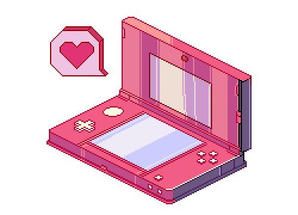

| Reading | Gaming | Drawing | Collecting Merchandise |
Reading
- Sounds cliche but reading is my passion ever since I was a toddler.
- I have a huge collection of books, including novels, manga, encyclopedias, and other types. I read both physical books and e-books.
- My favourite genre of literature is fantasy filled with mythologies,paleontologies and legends.
- The complete collection I have is Tokyo Ghoul,Twisted Tales and Magis Manis Coklat Go back up.
Gaming
- I play all types of games like role-playing, action, horror, and MMO-RPG.
- My most favourite and long-term games are anime-style games such as Hoyoverse and KuroGame.
- Gaming is one way to release all pent-up stress, and some games can help sharpen your mind! Go back up.
Drawing

- I learned to draw due to my friends' influence and I’m still going at it until now. Drawing is a hobby that helps me stay super focused!
- Sometimes I post my drawings on social media to get feedback and improve from people's comments.
- I was planning to try doing and practising digital art in hope that I would be able to draw more things that I love and doing art commissions. Go back up.
Collecting Merchandise
- Collecting merchandise of my favourite anime and games is a MUST! I enjoy seeing my collections on the shelf.
- A few of my merch is from family and close friends.
- I usually save quite a fortune to buy these merch and I would buy it during any anime events to get cheaper prices. Go back up.
Know Me More At